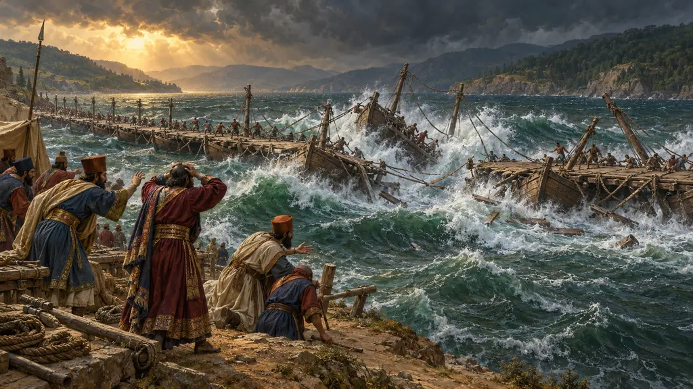
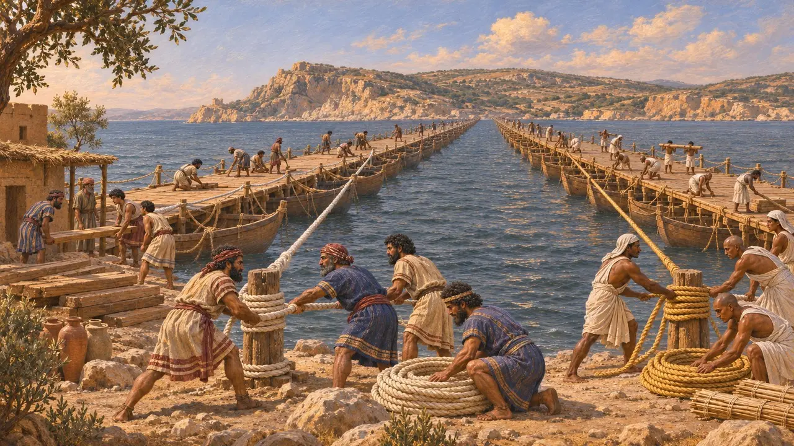
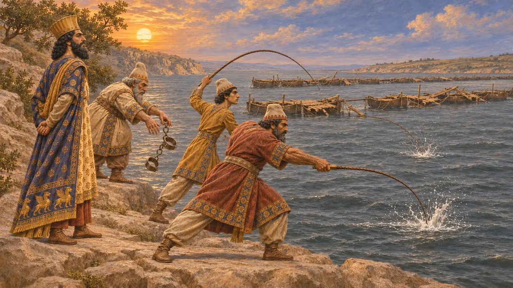
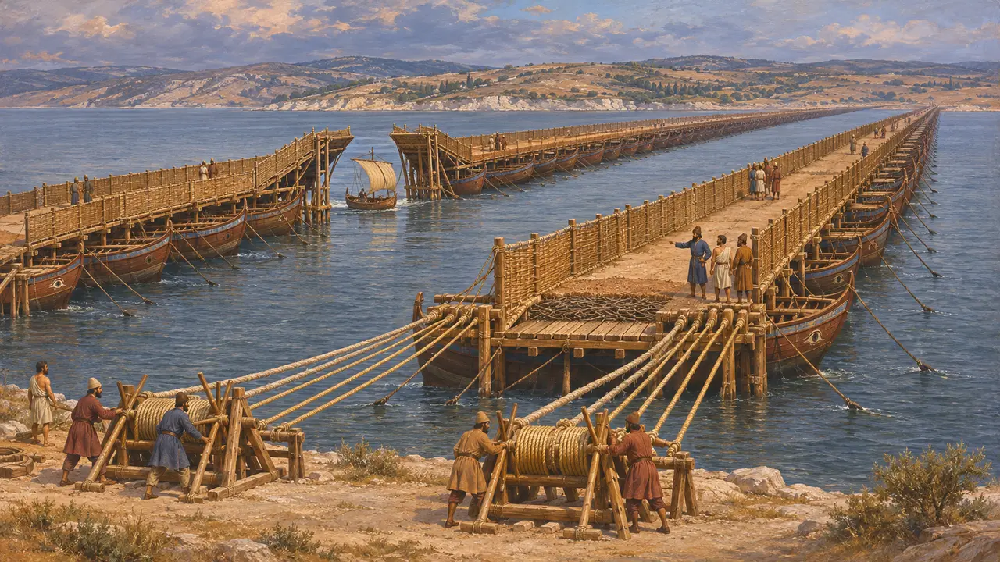
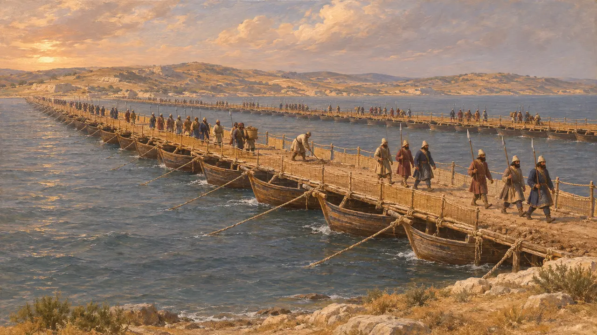
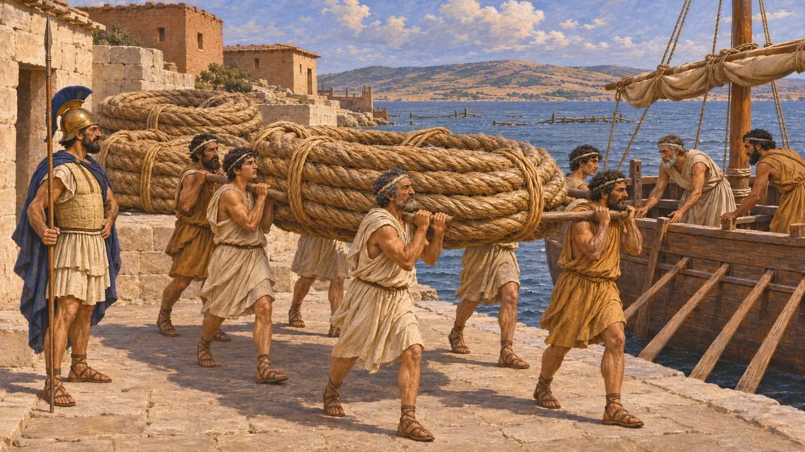

Enciclopédia › Batalhas e eventos

As pontes de Xerxes sobre o Helesponto
Duas pontes de barcos de Abidos à Europa, construídas para a invasão da Grécia, 481-480 AEC
No jogo: Nível 9: O Canal
Para levar seu exército da Ásia à Europa, Xerxes mandou lançar duas pontes de navios sobre o Helesponto, perto de Abidos. Uma tempestade destruiu o primeiro par, e um segundo par fez o exército atravessar na primavera de 480 AEC. Heródoto as descreve em detalhes minuciosos, e para os escritores gregos elas se tornaram um símbolo do orgulho real que desafiava o próprio mar.
No jogo: O jogo segue Heródoto: as pontes destruídas, os açoites e as decapitações, e 674 navios, número que ele apresenta como 360 e 314 para duas pontes distintas. O jogo mostra o açoite como fato; é a história de Heródoto, não um registro persa.

As primeiras pontes
Relato antigoHeródoto diz que a obra ia de Abidos, na margem asiática, até um promontório rochoso do lado europeu, entre Sestos e Madito, uma travessia de sete estádios, pouco mais de um quilômetro. Foram construídas duas pontes. Os fenícios fizeram uma com cabos de linho branco, e os egípcios, a outra com cabos de papiro. Xerxes passou o inverno em Sardes enquanto a obra prosseguia.
Herodotus 7.32-34; 7.37

O açoite do mar
Lenda posteriorQuando uma tempestade destruiu ambas as pontes, Heródoto diz que Xerxes mandou dar trezentos açoites ao Helesponto e lançar grilhões em suas águas. Acrescenta que ouvira dizer que também foram enviados homens com ferros de marcar. Os açoitadores receberam ordem de chamar a água de amarga e de dizer que ela havia ofendido um senhor que nenhum mal lhe fizera. Os supervisores da obra foram decapitados. O relato condiz com o retrato que Heródoto traça de um rei que se excedeu, e nenhuma fonte persa o registra.
Herodotus 7.35

As segundas pontes
Relato antigoOs novos engenheiros ancoraram 360 pentecônteros e trirremes para a ponte do lado do Mar Negro e 314 para a outra, presos por âncoras pesadas. Cada ponte tinha agora dois cabos de linho e quatro de papiro, esticados por cabrestantes de madeira em terra. Pranchas, ramagem e terra socada formavam o leito da estrada, com anteparos para que os animais não vissem a água. Foram deixadas aberturas para a passagem de barcos pequenos.
Herodotus 7.36

Quanto confiar no relato
DisputadoNenhum texto persa menciona as pontes, mas Ésquilo, escrevendo em 472 AEC, confirma que o estreito foi atravessado por uma ponte. Os historiadores aceitam a construção, pois Dario havia lançado uma ponte sobre o Bósforo, mas discutem os locais de desembarque, o ancoramento e o espaçamento dos navios, e se 674 embarcações é um número correto. Hammond e Roseman sustentaram que o relato técnico de Heródoto é coerente. Outros observam que seus grilhões ecoam Ésquilo, cujo fantasma de Dario condena Xerxes por acorrentar o sagrado Helesponto.
N. G. L. Hammond and L. J. Roseman, JHS 116, 1996; Aeschylus, Persians

O destino dos cabos
Relato antigoHeródoto conta que, quando o exército de Xerxes voltou depois de Salamina, tempestades haviam rompido as pontes e as tropas atravessaram de navio. Em 479 AEC, a frota grega navegou até o Helesponto e encontrou as pontes já destruídas. Os atenienses então sitiaram Sestos, tomaram os cabos da ponte e os levaram para casa, a fim de consagrá-los em seus santuários.
Herodotus 8.117; 9.114; 9.121
Fontes
- Herodotus 7.32-37
- Herodotus 8.117; 9.114-121
- Aeschylus, Persians
- N. G. L. Hammond and L. J. Roseman, The Construction of Xerxes' Bridge over the Hellespont, Journal of Hellenic Studies 116, 1996
- P. Briant, From Cyrus to Alexander, 2002